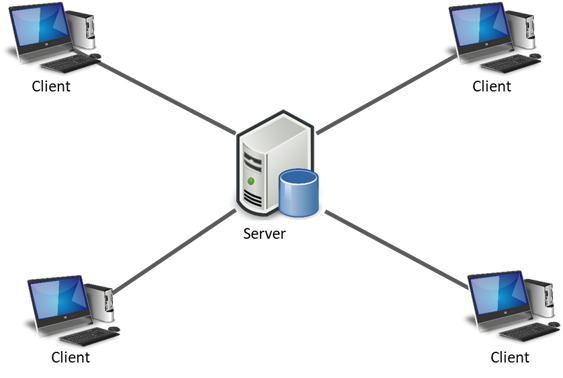

¿Qué es un cliente, y que es un servidor?
Cliente-Servidor es uno de los estilos arquitectónicos distribuidos más conocidos, el cual está compuesto por dos componentes, el proveedor y el consumidor. El proveedor es un servidor que brinda una serie de servicios o recursos los cuales son consumido por el Cliente.
En una arquitectura Cliente-Servidor existe un servidor y múltiples clientes que se conectan al servidor para recuperar todos los recursos necesarios para funcionar, en este sentido, el cliente solo es una capa para representar los datos y se detonan acciones para modificar el estado del servidor, mientras que el servidor es el que hace todo el trabajo pesado.
NOTA IMPORTANTE
Un cliente realiza peticiones a otro programa, el servidor, quien le da respuesta.
Estructura cliente servidor
